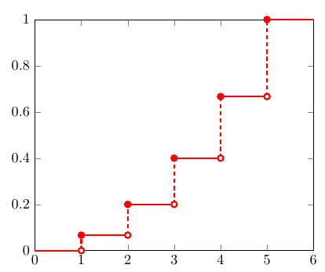
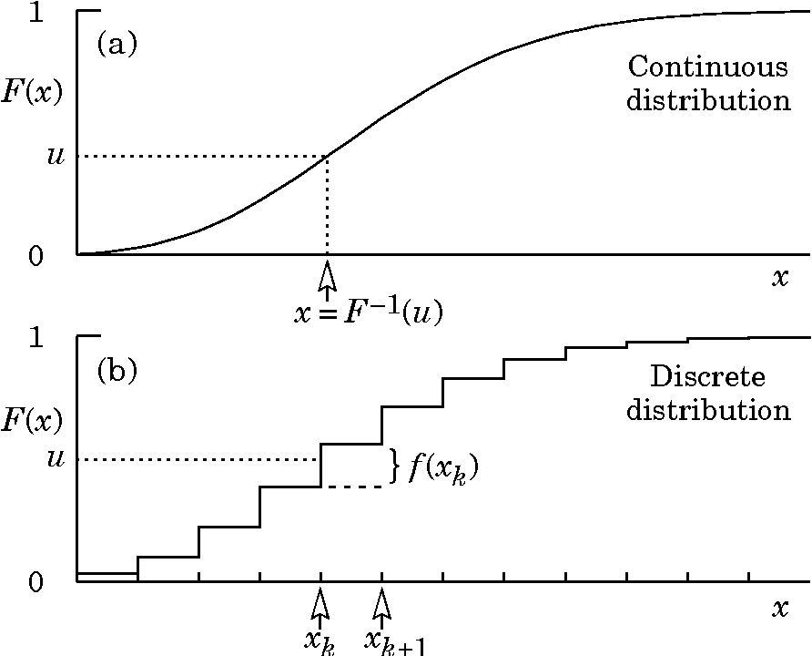
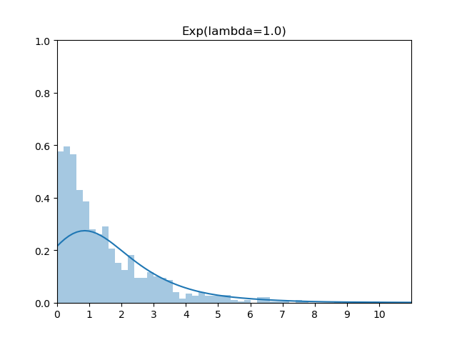
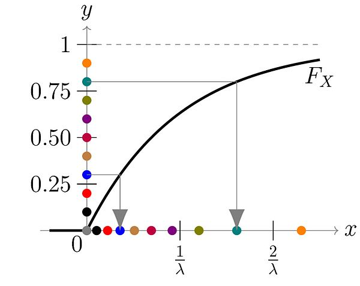
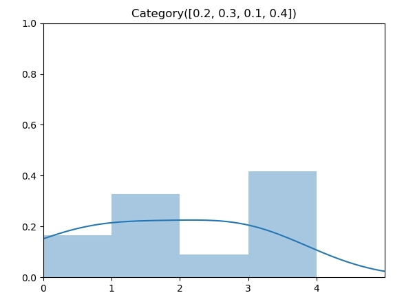
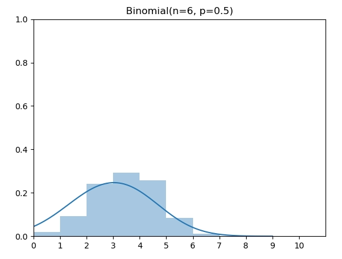
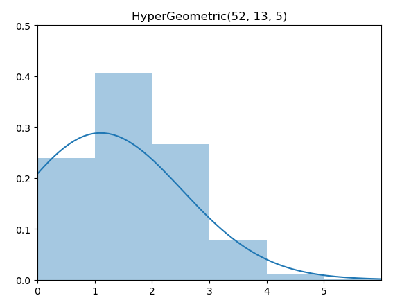
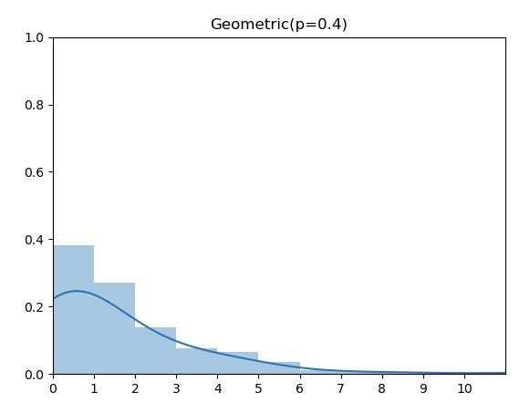
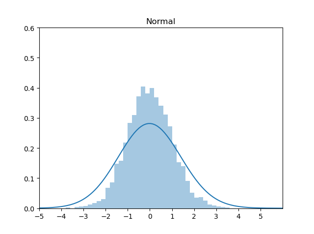

上期 从零构建统计随机变量生成器之离散基础篇，我们从零出发构建了基于伯努利的基础离散分布，这一期我们来详细介绍广泛使用的 Inverse Transform Method（逆变换采样方法）。
- 从零构建统计随机变量生成器之 离散基础篇
- 从零构建统计随机变量生成器之 用逆变换采样方法构建随机变量生成器
- 深入 LeetCode 470 拒绝采样，状态转移图求期望和一道经典统计求期望题目
- 从零构建统计随机变量生成器之 正态分布 Box-Muller方法
逆变换采样方法
Inverse Transform Method 是最基础常见的方法，可用于离散分布和连续分布。常见的分布一般都能通过此方法生成，只需要随机变量CDF的解析表达式。假设随机变量 $X$，其CDF为 $F^{-1}$，则 Inverse Transform Method 仅有两步
- 通过生成 [0, 1] 之间的均匀随机数 $u$
- 代入 $F^{-1}$ 即产生满足$X$分布的实例 $x = F^{-1}(u)$
离散例子
我们先举一个离散分布来直观感受一下其工作机制。有如下PMF的离散类别分布，范围在 [1, 5]。
$$
P(X = 1)=\frac{1}{15}
$$
$$
P(X = 2)=\frac{2}{15}
$$
$$
P(X = 3)=\frac{1}{5}
$$
$$
P(X = 4)=\frac{4}{15}
$$
$$
P(X = 5)=\frac{1}{3}
$$
转换成CDF为
$$
P(X \leq 1)=\frac{1}{15}
$$
$$
P(X \leq 2)=\frac{1}{15}+\frac{2}{15}=\frac{1}{5}
$$
$$
P(X \leq 3)=\frac{1}{15}+\frac{2}{15}+\frac{1}{5}=\frac{6}{15}
$$
$$
P(X \leq 4)=\frac{1}{15}+\frac{2}{15}+\frac{1}{5}+\frac{4}{15}=\frac{2}{3}
$$
$$
P(X \leq 5)=\frac{1}{15}+\frac{2}{15}+\frac{1}{5}+\frac{4}{15}+\frac{1}{3}=1
$$
画出对应的CDF图

那么Inverse Transformation Method 的第一步，随机生成 0-1 之间的数 u，可以直观的认为是在 y 轴上生成一个随机的点 u。注意到5段竖虚线对应了5个离散的取值，它们的长度和为1，并且每一段长度代表了每个值的权重。因此，通过在 y 轴上的均匀采样可以生成给定PMF的 x 的分布。
离散分布的逆变换采样方法用数学公式可以表述为：找到第一个 x，其CDF的范围包括了 u，即
$$
F^{-1}(u)=\min {x: F(x) \geq u}
$$
扩展到连续分布
有了离散类别分布的直观感受，扩展到连续分布也就不难理解了。类似于微积分中将连续空间做离散切分，再通过极限的方法，连续光滑函数在 y 轴上可以切分成长度为 $\Delta u$ 的线段，那么生成的 x 值就是其近似值。随着 $ \lim _{\Delta u \rightarrow 0} $，最终 $ x=F^{-1}(u) $ 即为满足要求的分布。

指数分布（连续）
以最为常见的指数分布为例，我们来看看具体的步骤。
我们知道指数分布的PDF如下
PDF 图为

计算CDF为
CDF 图

可以求得逆函数为
$$
x=F^{-1}(u)=-\frac{1}{\lambda} \ln (1-u)
$$
由于 1-u 在 [0, 1] 范围上的随机数等价于 u，因此，x 的生成公式等价于
$$
x=-\frac{1}{\lambda} \ln (u)
$$
实现代码
对应代码很简单
1 | import random |
Github 代码地址：
https://github.com/MyEncyclopedia/stats_simulation/blob/main/distrib_sim/coutinous_exp_inv.py
类别分布（离散）
我们再来看基于类别分布 Inverse Transformation Method的其他离散分布例子。在从零构建统计随机变量生成器之离散基础篇中，我们已经介绍了类别分布（Categorical Distribution）的逆变换采样算法，同时还介绍了通过模拟 Bernoulli 实验来生成二项，几何，超几何分布的方法。在这一篇中，我们通过逆变换采样算法再来生成这些分布。
先回顾一下类别分布的逆变换采样实现。
给定如下的类别分布， $\vec p = [0.2, 0.3, 0.1, 0.4] $

实现代码
类别分布的逆变换采样实现需要找到第一个大于 u 的元素的索引序号，在我们的实现中，将 $\vec p = [0.2, 0.3, 0.1, 0.4] $ 转换成累计概率 $\vec c = [0.2, 0.5, 0.6, 1] $ 后，由于 $\vec c$ 数组是非递减的，因此我们可以用二分法代替线性查找，将时间复杂度降到 $O(log(n))$。下面的实现中直接调用 python bisect 函数即可。
1 | import bisect |
Github 代码地址：
https://github.com/MyEncyclopedia/stats_simulation/blob/main/distrib_sim/discrete_categorical.py
二项分布（离散）
二项分布（Binomial Distribution）有两个参数 n 和 p，表示伯努利实验做n次后成功的次数。图中为 n=6，p=0.5的二项分布。

概率质量函数（PMF）
实现代码
根据上面的PMF定义，我们将 [0, 6] 上的PMF计算出来，然后调用类别分布的逆变换采样实现即可：
1 | from scipy.special import comb |
Github 代码地址：
https://github.com/MyEncyclopedia/stats_simulation/blob/main/distrib_sim/discrete_binomial_inv.py
超几何分布（离散）
同样的，超几何分布（HyperGeometric Distribution）也可以如法炮制。

概率质量函数（PMF）
实现代码
1 | from scipy.special import comb |
Github 代码地址：
几何分布（离散）
几何分布（Geometric Distribution）和上面的二项分布以及超几何分布不同的是，它的 support 是所有非负整数，因此，我们无法穷举计算所有 x 的概率。但是，我们可以通过将CDF 推出 Inverse CDF的解析表达式来直接实现。

概率质量函数（PMF）
$$
\operatorname{P}_\text{Geometric}(X=k)=(1-p)^{k-1} p
$$
CDF
$$
F_X(x) = 1- (1-p)^x
$$
Inverse CDF
反函数求得为
$$
F^{-1}(u) = \lfloor { log(1-u) \over log(1-p) }\rfloor
$$
实现代码
1 | import random |
Github 代码地址：
https://github.com/MyEncyclopedia/stats_simulation/blob/main/distrib_sim/discrete_geometric_inv.py
标准正态分布
一般，标准正态分布用Box-Muller 方法来生成，这个后续将做详细介绍。这里我们用 Schmeiser 提出的基于Inverse Transformation Method的近似方法来生成：
$$
X=F^{-1}(u) \approx \frac{u^{0.135}-(1-u)^{0.135}}{0.1975}
$$

实现代码
1 | import random |
Github 代码地址：
https://github.com/MyEncyclopedia/stats_simulation/blob/main/distrib_sim/coutinous_normal_apprx.py
评论
shortnamefor Disqus. Please set it in_config.yml.